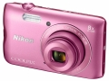

器材
党
全部器材
产品年表
名词百科
榜单
器材库
> 不可换镜头数码相机 > COOLPIX A300

尼康
COOLPIX A300
分类
不可换镜头数码相机
点评
0 条
图片
0 张
评测
0 篇
采用2005万有效像素CCD传感器，搭载25-200mm（35mm等效焦距）8倍光学变焦镜头，是一款具备超薄、时尚机身的轻便型数码相机。内置Wi-Fi及蓝牙功能。
产品类型
不可换镜头数码相机
综合评分
暂无评分
无忌评测
暂无评测
规格参数
网友点评
(0)
产品图 / 样片
(0)
评测文章
(0)
规格总览
发布日期
2016-02-23
影像规格
影像传感器
CCD
影像传感器尺寸
1/2.3英寸
总像素
2048万
有效像素
2005万
静态图像格式
JPEG
静态图像尺寸
5152×3864, 3648×2736, 2272×1704, 1600×1200, 640×480, [16:9] 5120×2880, [1:1] 3864×3864
画幅比
4:3, 16:9, 1:1
短片格式
AVI
短片尺寸
1280×720(30p), 640×480(30p), 320×240(30p)
防抖系统
静态图像：镜片位移方式动画：镜片位移方式和电子防抖并用
镜头和对焦
镜头结构
8片/7组
焦距
4.5mm-36.0mm
等效35mm画幅焦距
25mm-200mm
最大光圈
f/3.7-6.6
光学变焦
8倍
数码变焦
4倍
最近对焦距离
广角端：50cm、远摄端：150cm, 微距2cm
自动对焦系统
对比侦测AF
曝光控制
测光模式
中央重点测光, 点测光, 矩阵测光
曝光模式
程序自动
快门速度
1/1500～1秒，4秒（烟花表演场景模式）
曝光补偿
±2EV以1/3EV级调整
ISO感光度
ISO 80~1600、ISO 3200（设定为自动拍摄模式时）
自拍
10秒、2秒；5秒（自拍定时器）
连拍
1.1帧/秒
闪光灯
内置闪光灯
固定
闪光涵盖范围
广角端：约0.5~2.8m、远摄端：约1.5m
取景规格
LCD类型
彩色TFT LCD
LCD尺寸
2.7英寸
LCD像素
约23万
视野率
约99%
亮度调节级数
5级
文件输入/输出
内置存储容量
约19MB
记录媒介
SD/SDHC, SDXC
数据接口
高速USB
视频/音频接口
Video 输出 (NTSC/PAL)
无线功能
Wi-Fi, NFC, 蓝牙
配件端口
三脚架接孔
支持打印协议
PictBridge
电源
电池
锂离子充电电池 EN-EL19
续航能力
静态图像：可拍摄约240张动画：可拍摄约45分钟
外观
颜色
银色, 黑色, 粉色
尺寸
95.9×58.0×20.1mm
重量
119g
其它
支持语言
英语, 日语
工作温度
0 - 40℃
工作湿度
不高于85%
该产品暂无存档的网友点评
该产品暂无存档的产品图
评测 / 相关文章
该产品暂无存档的评测文章